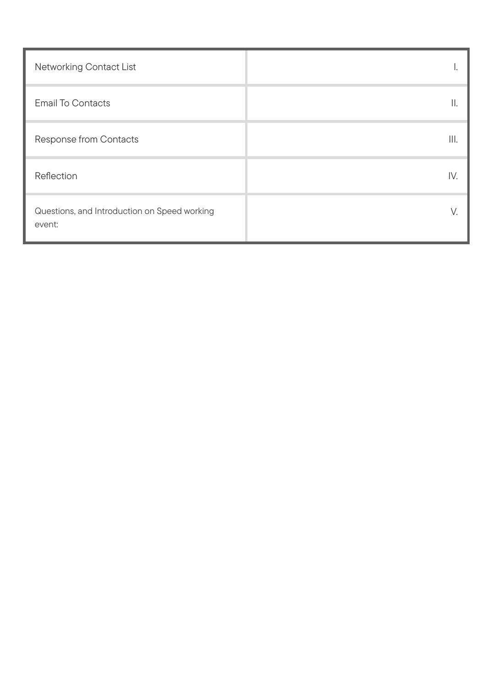
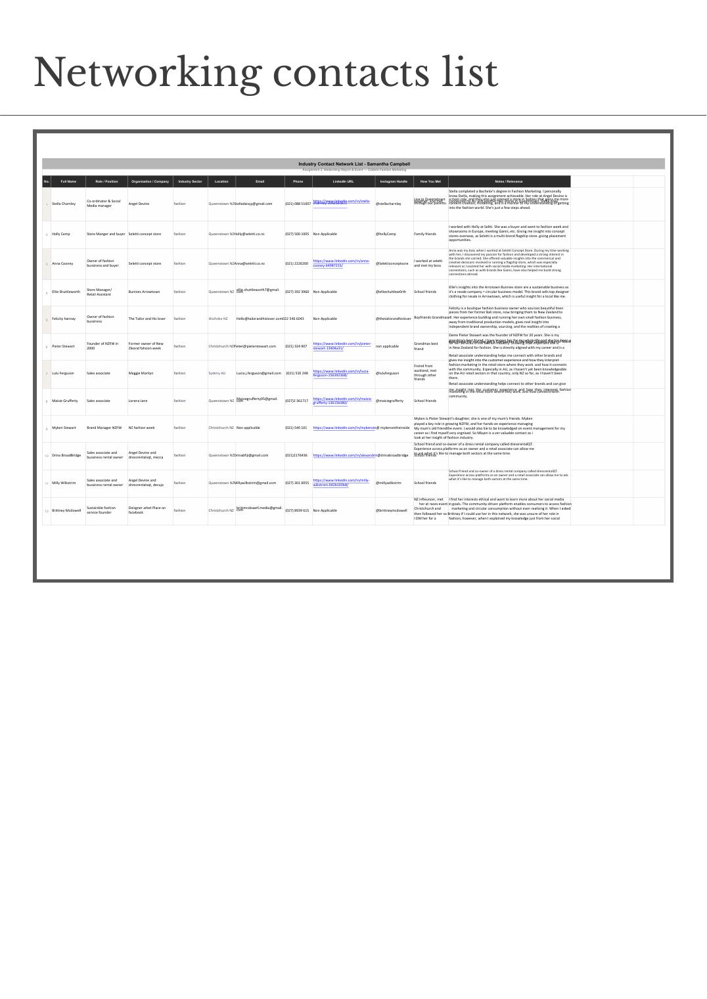
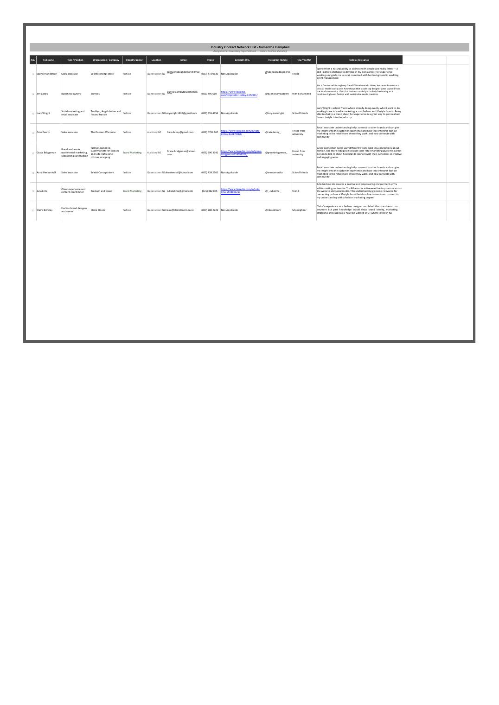
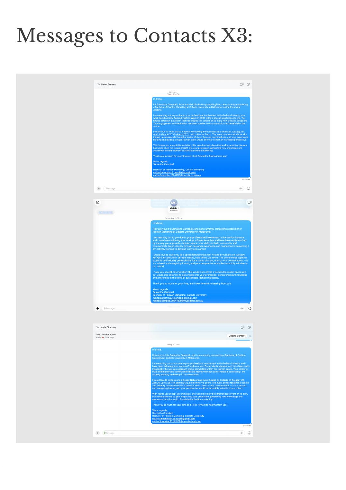

Brief
Build a real industry contact list, run an outreach campaign, and host a speed-networking event with a working industry guest.
The deliverable was four parts: a contact list with relevance notes, a personalised email outreach round, a record of responses, and a reflection on what the network actually unlocks. The point wasn't volume — it was relevance. Each contact had to map to a real lever in my future career path: independent fashion brands, multi-label boutiques, content and styling, NZ-to-overseas connections.
Approach
Six contacts, every one already adjacent to my world: Stella Charnley (Angel Devine, content + modelling, just opened in Sydney), Holly Camp (Seletti store manager and buyer, Ganni-side European showroom experience), Anna Cooney (Seletti owner, my old boss, social media marketing mentor), Ellie Shuttleworth (Bunnies Arrowtown — a resale circular business model), Felicity Hannay (The Tailor and His Lover, independent boutique founder), and Dame Pieter Stewart (NZFW founder, Companion of the New Zealand Order of Merit).
Each got a personalised outreach email, with follow-ups logged. The speed-networking event was structured around prepared questions and an introduction from Dame Pieter on the realities of running a fashion week for two decades — and what that's taught her about how the NZ industry connects to the rest of the world.




A network isn't a list. It's six people who pick up the phone — and one of them happens to have founded New Zealand Fashion Week.
Outcome
A documented industry network, a hosted speed-networking event, and a written reflection on what the network actually opens up.
Beyond the assignment, the work mapped out the real-world bridge from a Queenstown retail floor to Australia and Europe — through Anna and Holly's existing connections at Ganni and the Italian/French showrooms, Stella's Sydney expansion, and Dame Pieter's industry-wide reach.